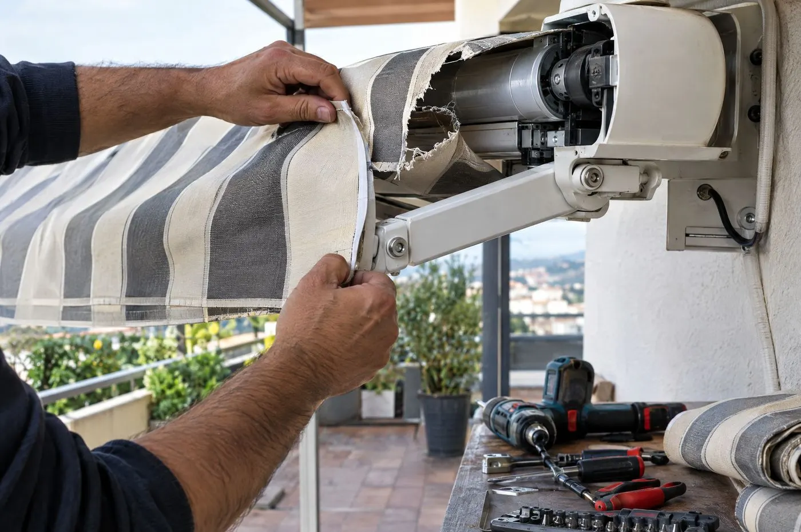
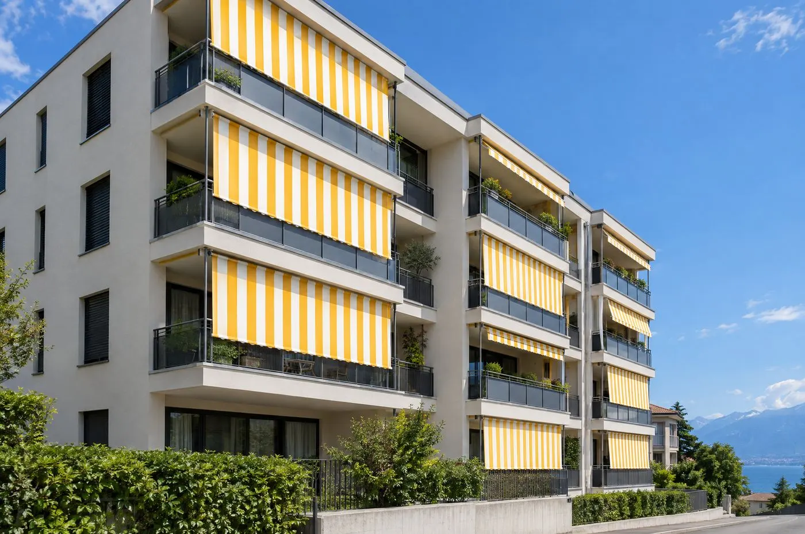

Accueil / Réparation
Store bloqué ou toile déchirée ?
Appelez-nous. On sécurise sous 48 heures ouvrées et on répare toutes les marques, même les stores de plus de vingt ans.

Les pannes que l’on règle le plus souvent.
Le store ne remonte plus
On le sécurise sur place pour qu’il ne prenne pas le vent, puis on contrôle le moteur, les fins de course et l’alimentation.
Le moteur tourne, rien ne bouge
Le plus souvent l’adaptateur ou le tube d’enroulement. Réparé dans la journée dans la plupart des cas.
La toile est déchirée ou délavée
Réentoilage : une toile neuve sur votre mécanisme, sans changer le store ni le coffre.
Les lames sont bloquées ou de travers
Remise en place des lames et des cordons, remplacement des lames tordues par la grêle.
La télécommande ne répond plus
Reprogrammation ou remplacement pour les moteurs Somfy, Simu et Elero.
La sangle du volet a cassé
Sangle neuve posée en une visite, ou passage au moteur si vous en avez assez de tirer.
Des tarifs annoncés avant de venir.
Le diagnostic est offert si vous faites réparer. Au-delà d’une heure de travail ou de pièces à commander, on vous envoie un devis avant d’aller plus loin.
| Déplacement Lausanne, Lavaux, Vevey | CHF 85.– |
|---|---|
| Déplacement Genève, Fribourg, Chablais | CHF 140.– |
| Heure de travail, par technicien | CHF 105.– |
| Sécurisation d’un store bloqué | CHF 160.– |
| Réentoilage d’un store banne de 4 m | dès CHF 690.– |

Une toile neuve, le même store.
Un mécanisme bien entretenu dure trente ans, une toile une dizaine. Nous reprenons votre toile à l’atelier de Lutry et reposons la neuve en une demi-journée.
- Jaune soleil
- Rayé gris perle
- Écru
- Anthracite
- Bleu Léman
Plus de 300 toiles Sattler et Dickson à voir sur nuancier, chez vous ou à l’atelier.
Une visite par an, avant l’été.
En avril ou en mai, un technicien passe sur tous vos stores : nettoyage, graissage, réglage des fins de course, contrôle des toiles et des capteurs.
Contrat d’entretien, maison jusqu’à 10 stores
190.– par an
- Déplacement compris
- Petites pièces d’usure comprises
- Priorité en cas de panne pendant la saison
- Résiliable chaque année